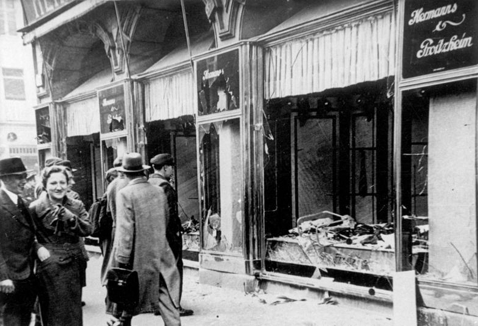
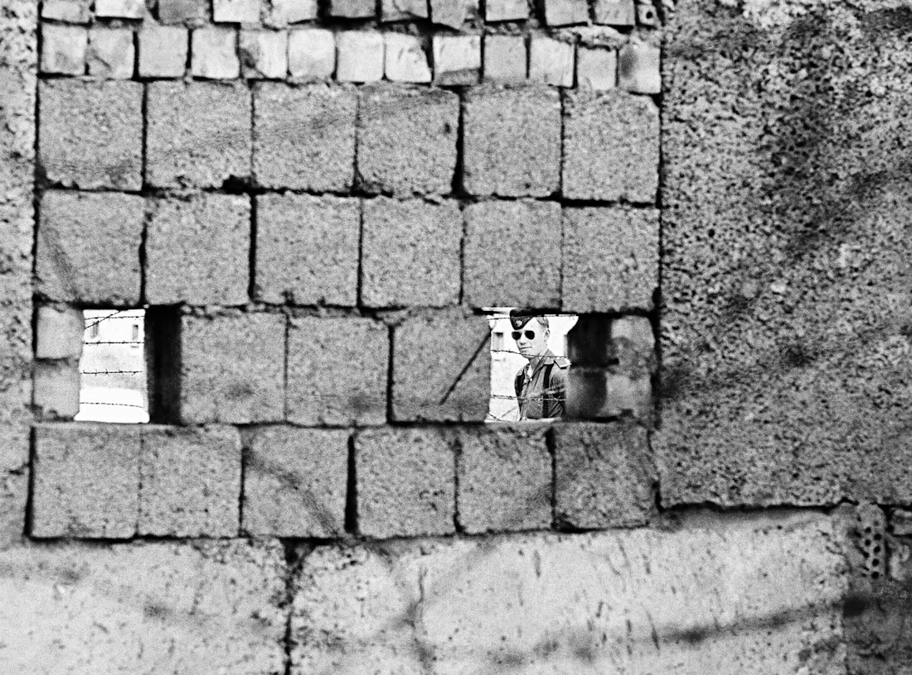
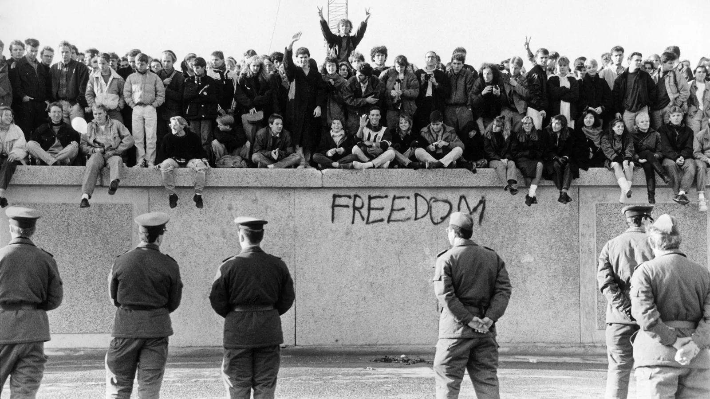
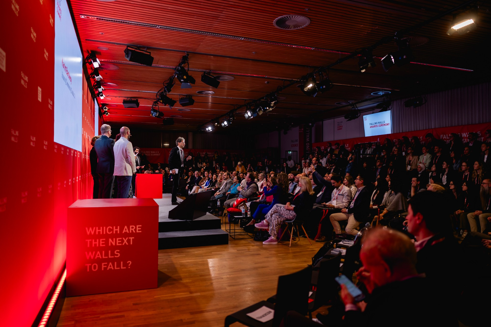
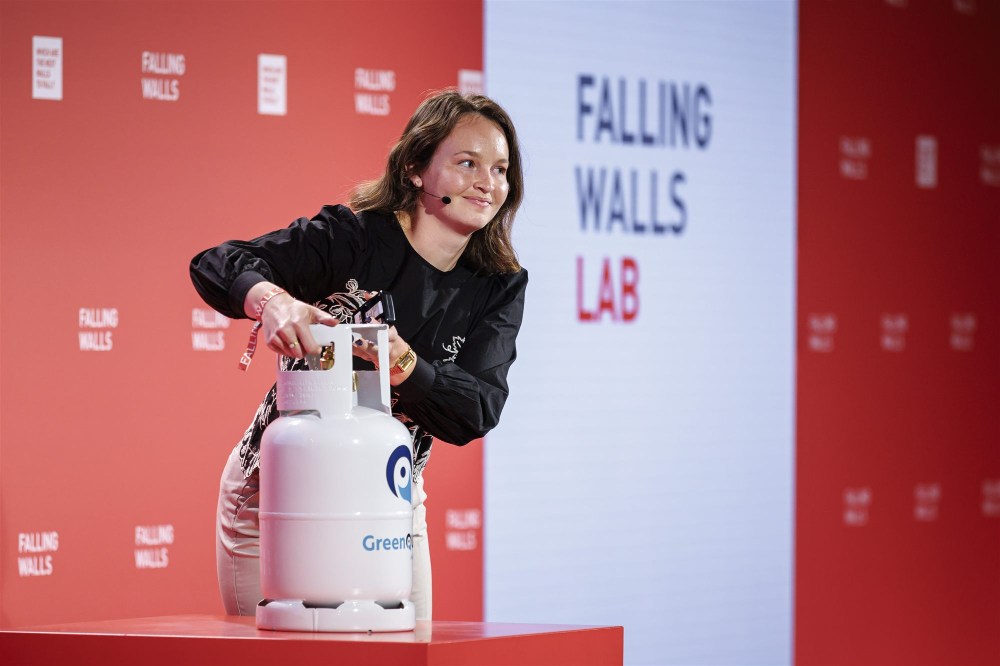
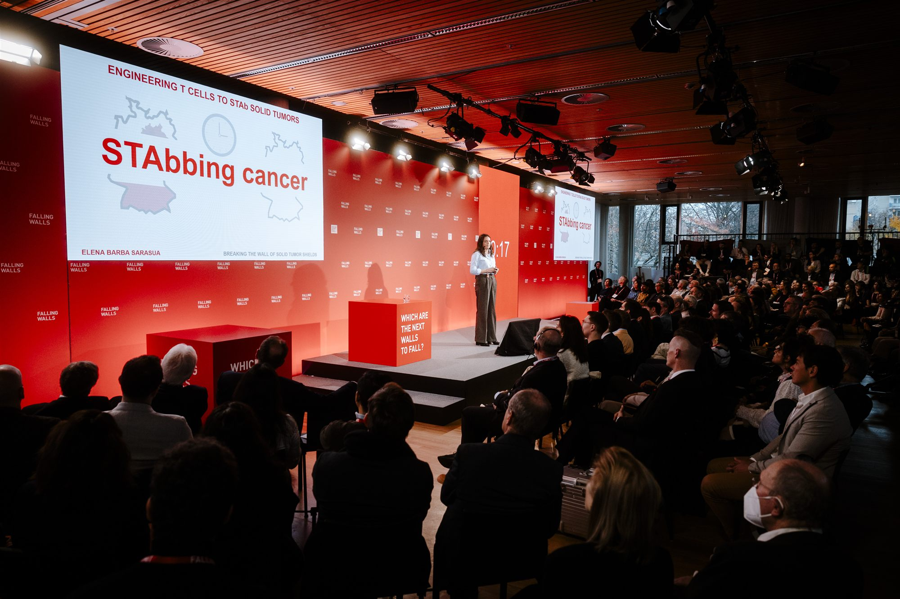
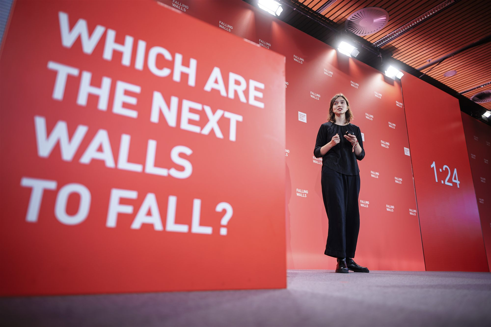
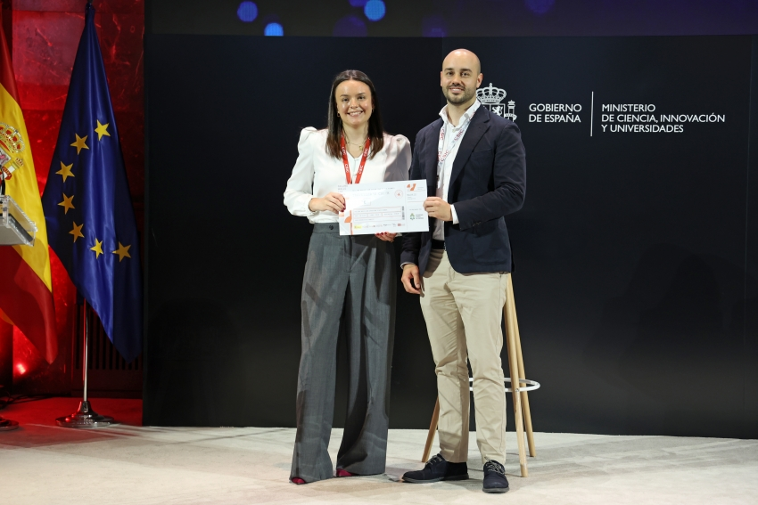

Sobre Falling Walls Lab
Una competición global de pitch: tres minutos para presentar la idea con la que derribarías un muro.
Qué es Falling Walls Lab
Falling Walls Lab es una competición internacional de la Falling Walls Foundation (Berlín) en la que estudiantes, investigadores al inicio de su carrera e innovadores de cualquier disciplina presentan en tres minutos una idea capaz de derribar un muro: científico, social o tecnológico. En la temporada 2026, más de 3.100 personas se presentaron a 91 Labs en más de 60 países, un récord del programa. Quien gana cada Lab compite en la Global Finale de Berlín, dentro del Falling Walls Science Summit, que en 2026 se celebró del 6 al 9 de noviembre.
Falling Walls Lab Madrid, Spain es la sede española de esa red desde 2022. Su quinta final reunió a 15 finalistas el 29 de mayo de 2026 en el salón de actos del CSIC, y ese mismo año España sumó una segunda sede en Barcelona. Es un evento organizado de manera independiente por el Museo Nacional de Ciencias Naturales (MNCN-CSIC), la Sociedad Española de Bioquímica y Biología Molecular (SEBBM), la Embajada de la República Federal de Alemania en España, el Servicio Alemán de Intercambio Académico (DAAD), la Academia Joven de España y la Universidad Complutense de Madrid a través de Compluemprende, socios independientes de la Falling Walls Foundation. En 2026 contó con el patrocinio de Innogate to Europe y Alsa.
De un muro que cayó a las ideas que derriban muros
La noche del 9 de noviembre de 1989 cayó el muro de Berlín: la prueba de que las barreras físicas y mentales también pueden derribarse. La Falling Walls Foundation, sin ánimo de lucro y con sede en Berlín, nace en 2009 para encontrar los avances que derriban los muros de nuestro tiempo.
-
1938
Recordar la persecución
El 9 de noviembre de 1938 los pogromos nazis abren el periodo más oscuro de la historia moderna de Europa.

Magdeburgo, 1938 · Bundesarchiv, Bild 146-1970-083-42 / CC-BY-SA 3.0 -
1961
Berlín, dividida
El 13 de agosto se levanta el muro. Durante 28 años separará familias, ciudades y bloques.

Construcción del muro, 1961 · autoría pendiente de confirmar -
1989
Cae el muro
La noche del 9 de noviembre se abren las fronteras. Las personas, no las armas, derriban un muro que parecía eterno.

Berlín, noviembre de 1989 · autoría pendiente de confirmar -
2009
Nace Falling Walls
En el 20.º aniversario, Berlín reúne a científicos de todo el mundo con una pregunta: ¿qué muros caerán a partir de ahora?

Science Summit, Berlín · © Falling Walls Foundation -
2011
Primer Falling Walls Lab
Una idea, tres minutos, un escenario: el formato que da voz a la próxima generación de investigadores.

Global Finale · © Falling Walls Foundation -
2022
Llega a España
Primera edición española en el Museo Nacional de Ciencias Naturales de Madrid. Desde entonces, una final cada primavera.

Salón de actos del CSIC, Madrid -
2025
España, plata mundial
Elena Barba Sarasua, ganadora en Madrid, logra el 2.º puesto en la Global Finale de Berlín.

Global Finale 2025 · © Falling Walls Foundation -
2026
Quinta edición
Madrid celebra su quinta final y España suma una segunda sede en Barcelona.

Finalistas de Madrid 2026
En imágenes





Fotos de Berlín © Falling Walls Foundation · Haz clic en una foto para ampliarla